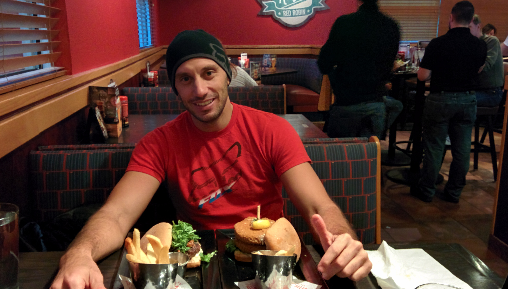

Welcome to L.A.'s biography website. This website is a brief introduction
about L.A. By navigating through the website,
you will learn more about him, his education focus and his understanding and view of the
software engineering field. He
also shares some of the most important books for programmers as well as some of his skills, and
DIY projects.
(Do you want to learn more about L.A.? Keep scrolling ;)
Hi there! L.A. is an Electric and Computer Engineer by training and a
hardcore programmer by
nature. L.A. will
graduate soon from UCSD and will start applying his knowledge IRL.
(The full “About Me” section is at the end of this page)
A picture is worth a 1000 words. Meet the mastermind ;) 
Abdelkader Laouini, a.k.a L.A., is currently a third-year Electrical and Computer Engineer student at the Jacobs School of Engineering, University of California San Diego. He will graduate in December 2021 with a Bachelor’s in Electrical and Computer Engineering.
L.A.’s fascination with computers and programming began as a youngster in Tunisia where he taught himself how to use and fix computers. During his senior year in high school, he accepted his first job as a customer service representative in a cybercafe. This opportunity strengthened his passion for providing technical support and good service to his customers.
After obtaining an International Baccalaureate in Math, he worked in a small company that offered IT solutions for individuals and small businesses. He sharpened his skillset and ability to better support his customers by picking up several skills, which included, software and hardware solutions as well as computer networking. After years of experience and hard work, he was promoted to a managerial position within the company. A position where he naturally excelled due to his drive, extensive technical knowledge and strong commitment to customer satisfaction.
The next chapter in L.A.’s life led him to the United States of America where he earned an opportunity to work for Apple, a renowned company at the forefront of the world’s technical industry. He worked as an Expert in Sales at the Pentagon City Apple store, in Northern Virginia. During a three-year period working for Apple, L.A. was constantly the top producer in nationwide sales, an award measured by revenue gains.
Working for Apple took his skill set and customer service skills to yet another level. L.A. quickly became the reliable go-to peer when regular or business customers needed support for more complex issues. While juggling his full-time position with Apple, L.A. decided to pursue a Computer Engineering degree to bolster his computer and programming knowledge. He started this journey by taking classes at Northern Virginia Community College then Mesa College once he moved to San Diego, California.
L.A.’s goal is for his reputation to precede him as a subject matter expert in the IT industry. He hopes to make an impact on efforts to bridge the gap between non-technical managers and engineers. Further, his background and success as a manager in the field, along with his ability to speak the engineering language as well as Arabic, French, and Italian will surely make him a strong asset to any company in the IT industry.